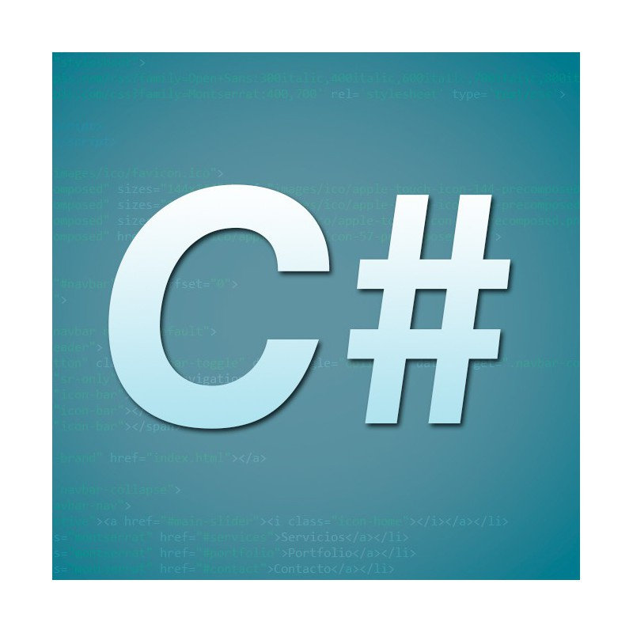

¿QUÉ SON LOS LENGUAJES DE PROGRAMACIÓN?
Un lenguaje de programación es un sistema que permite a las personas escribir instrucciones que pueden ser interpretadas o ejecutadas por un ordenador. Gracias a estos lenguajes podemos crear programas, aplicaciones, páginas web, videojuegos, sistemas de gestión y muchas otras herramientas digitales.
Los lenguajes de programación utilizan unas reglas determinadas para indicar cómo deben escribirse las instrucciones. Estas reglas forman la sintaxis del lenguaje. Aunque cada lenguaje tiene sus propias características, muchos comparten conceptos como variables, condiciones, funciones, bucles y estructuras de datos.
En el desarrollo web se utilizan diferentes lenguajes dependiendo de la parte de la aplicación que queramos construir. Algunos se utilizan principalmente en el navegador, mientras que otros se emplean en los servidores para procesar información, acceder a bases de datos o gestionar la lógica de una aplicación.
No existe un único lenguaje de programación que sirva para todos los proyectos. La elección depende de factores como el tipo de aplicación, las herramientas disponibles, los conocimientos del equipo de desarrollo, el rendimiento necesario y las tecnologías que se quieran utilizar.
JAVASCRIPT

JavaScript es uno de los lenguajes fundamentales del desarrollo web. Se ejecuta principalmente en el navegador y permite crear páginas interactivas y aplicaciones capaces de responder a las acciones realizadas por los usuarios.
Gracias a JavaScript, una página web puede modificar su contenido sin necesidad de recargar completamente el documento. También permite reaccionar a eventos como pulsar un botón, escribir en un formulario, mover el ratón o seleccionar una opción.
Con el paso del tiempo, JavaScript también ha adquirido una gran importancia en el desarrollo del lado del servidor. Entornos como Node.js permiten utilizar JavaScript fuera del navegador y crear servidores y aplicaciones completas utilizando el mismo lenguaje.
Actualmente JavaScript forma parte de muchas tecnologías y herramientas utilizadas para construir aplicaciones web modernas. Es especialmente importante porque está integrado directamente en los navegadores y porque existe un gran ecosistema de librerías y herramientas relacionadas con el lenguaje.
PYTHON

Python es un lenguaje de programación conocido por tener una sintaxis relativamente sencilla y fácil de leer. Por esta razón se utiliza con frecuencia para aprender programación, aunque también es una herramienta utilizada en proyectos profesionales.
En el desarrollo web, Python puede utilizarse en el lado del servidor para construir aplicaciones que procesan solicitudes, gestionan usuarios, trabajan con bases de datos y generan respuestas para los navegadores.
Existen diferentes frameworks y herramientas que permiten desarrollar aplicaciones web con Python. Entre ellos se encuentran Django y Flask, que ofrecen diferentes formas de organizar y construir aplicaciones.
Además del desarrollo web, Python tiene una presencia muy importante en áreas como el análisis de datos, la inteligencia artificial, la automatización de tareas y la investigación científica. Esta variedad de usos ha contribuido a que sea uno de los lenguajes más conocidos y utilizados actualmente.
JAVA

Java es un lenguaje de programación que lleva muchos años siendo utilizado en el desarrollo de aplicaciones. Su diseño permite crear programas que pueden ejecutarse sobre diferentes sistemas mediante la máquina virtual de Java.
En el ámbito web, Java ha tenido una presencia especialmente importante en aplicaciones empresariales y sistemas de gran tamaño. Se utiliza para desarrollar aplicaciones del lado del servidor y sistemas que necesitan gestionar grandes cantidades de información y usuarios.
El ecosistema de Java incluye numerosas herramientas y frameworks destinados al desarrollo de aplicaciones web. Entre ellos destaca Spring, que proporciona diferentes componentes para construir aplicaciones y servicios.
Java también se utiliza fuera de la web en diferentes tipos de aplicaciones. Su larga trayectoria, su amplio ecosistema y la existencia de numerosas herramientas de desarrollo han hecho que continúe siendo una tecnología relevante en muchos entornos profesionales.
PHP

PHP es un lenguaje de programación especialmente conocido por su utilización en el desarrollo web. Se ejecuta normalmente en el servidor y permite generar contenido dinámico que posteriormente recibe el navegador del usuario.
Una de sus características más importantes es que puede integrarse con HTML para crear páginas cuyo contenido depende de diferentes datos o acciones. Por ejemplo, PHP puede utilizarse para procesar formularios, gestionar sesiones de usuarios o consultar información almacenada en una base de datos.
PHP ha tenido una gran influencia en la evolución de la web y continúa utilizándose en numerosos sitios y aplicaciones. También existen sistemas de gestión de contenidos construidos con PHP, entre los que destaca WordPress.
Para desarrollar aplicaciones web con PHP se pueden utilizar diferentes frameworks y herramientas. Estas tecnologías ayudan a organizar el código y facilitan la creación de aplicaciones más grandes y estructuradas.
C#

C# es un lenguaje de programación desarrollado inicialmente por Microsoft y utilizado dentro del ecosistema .NET. Es un lenguaje moderno y de propósito general que permite desarrollar diferentes tipos de aplicaciones.
En el desarrollo web, C# se utiliza principalmente junto con tecnologías de .NET, como ASP.NET. Con estas herramientas es posible crear aplicaciones web, servicios y APIs que funcionan en servidores.
Una de las características del ecosistema .NET es que permite desarrollar aplicaciones para diferentes sistemas operativos. Esto ha ampliado las posibilidades de utilización de C# más allá de los entornos tradicionales asociados a Microsoft.
C# también se emplea en otros ámbitos, como el desarrollo de aplicaciones de escritorio, servicios y videojuegos. En este último campo destaca su utilización con motores como Unity. Por ello, aprender C# permite conocer conceptos de programación que pueden aplicarse a diferentes tipos de proyectos.